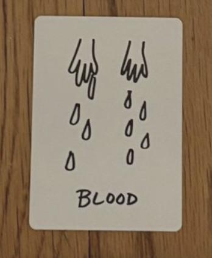
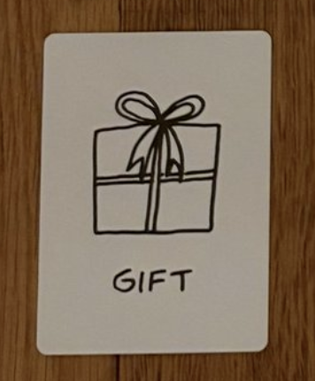
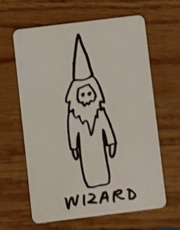

i pulled these cards on 08-31-2026 from “the deck of character” with Mai Tran.
i’m really feeling these three cards in particular:
blood

Most often, it refers to hard work. It is likely a call for you or someone you know to put more effort into something
Make sure you are not taking the hard road just for the sake of it.
Blood can also stand for general pain, struggle, or even guilt.
In rarer circumstances, Blood implies violence and greater suffering
Blood is also a beautiful symbol of connection and ancestry, passed down from generation to generation.
i’ve been working a lot at the shop, doing 4 consecutive closing shifts in a week. it was a lot. i feel like i was working harder but not smarter. these shifts end up being more exhausting than i anticipate. the extra money is nice but i really have to weigh the time spent in this job vs. dedicated heads-down work time. in off-times i try to do work but its too distracting, i can’t get any deep work done there.
violence: i have been quite confrontational and combative lately, letting out things that i’ve been processing and hold within for a long time. i’ve been harsh, yes, but i’ve been honest. i don’t believe in keeping people i don’t respect for the sake of “using them later”. i’m not afraid of burning bridges, even going scorched earth on those who have wronged me or my loved ones, or those that i’ve sensed even a smidge of contempt from… time and time again i’ve learned to trust my intuition about people.
i am picky with people, yes. but for those who have earned my trust, they get the full extent of my love and loyalty.
so it’s fine if people think i’m a mean ass bitch. i know that i am.
someone told me that so-and-so thinks i don’t like them… i don’t particularly hate this person. it’s just that my life is overflowing with those who are important to me, i don’t have time to waste on mediocre company.
i’m confident enough in my ability to cultivate meaningful relationships that i would rather be alone than to waste my time with people who make me feel anything less than good.
gift

It is a positive omen, symbolizing oncoming blessings and even literal gifts. Live with gratitude everyday for what comes your way.
Gift can also be a nudge to give of yourself too. Life is sweeter when we are in service to our friends, loved ones, and surrounding community.
feeling really good after my birthday party. it truly was a great time and surrounded by so much love. it’s also such a gift to have found my current roommates.
wizard

Wizard reminds you that you are powerful. Stand tall in your truth. You hold the key to your success.
Use your life experience to make thoughtful, noble decisions at this time.
heavy on that “stand tall in your truth”. no one is going to save me but myself. i can’t doubt myself, i just have to keep moving along, committing to the path i’ve chosen. i also can’t get bogged down by every little annoyance or inconvenience. it’s wild how motivated i am by spite, but in times like these i lean into it.
with every act of discipline— whether it’s an extra set at the gym, a habit or goal i check off, or a blog post i produce, i think about how i’m mogging my opps.
“don’t be mad ‘cause i’m doing me better than you doing you”
there’s still so much to do.